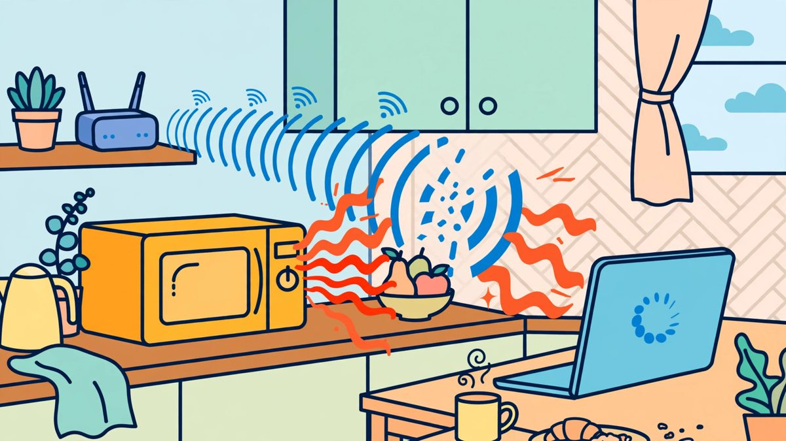

Wi-Fi drops when the microwave runs: prove it, then fix it

Does the timing actually line up, or does it just feel that way? Kitchens are busy places, and a video that buffers at lunchtime has plenty of possible causes. This fault, though, has a signature no other fault has: it starts when the oven starts and stops when the oven stops. Two minutes of testing confirms or clears it, and the confirmation matters, because the fix for oven interference is completely different from the fix for a weak signal.
The two-minute test that proves it
Run this before changing a single setting.
- Pick the device that drops and check which band it is on. In its Wi-Fi details, a channel number from 1 to 13 means it is using 2.4 GHz. Note the result.
- Start a video or a large download on that device, in the spot where the drops happen, with the microwave off. Let it run for thirty seconds so you have a clean baseline.
- Put a cup of water in the microwave and run it for one minute. Watch the device, not the oven. Buffering, a frozen frame, or a dropped call that begins inside that minute is the interference pattern.
- Stop the oven. Recovery within a few seconds of the oven stopping completes the pattern: on with the oven, off with the oven.
- Repeat steps 2 to 4 with the same device connected to the 5 GHz network. This is the control. The oven does not transmit at 5 GHz, so a clean run there, from the same spot, isolates the fault to 2.4 GHz interference rather than a dying router or a provider outage.
What success looks like at this stage: the drop happens on 2.4 GHz with the oven running, does not happen on 5 GHz with the oven running, and stops when the oven stops. All three together mean the oven is proven. If the drop also happens on 5 GHz, or happens with the oven off, the microwave is innocent and the general disconnect guide is the right next step.
Why the oven wins on 2.4 GHz
A microwave oven heats food with radio waves at about 2.45 GHz. The 2.4 GHz Wi-Fi band covers roughly 2.4 to 2.5 GHz, so the oven is not near the Wi-Fi band. It is in the middle of it.
That overlap is historical, not accidental. The 2.4 GHz band was set aside internationally for industrial, scientific, and medical equipment, and ovens are its biggest household user. Wi-Fi was allowed into the band later, unlicensed, on the understanding that it would tolerate interference from the equipment already there. Nothing in the rules protects your network from your oven.
A sealed oven still leaks a trace. The US Food and Drug Administration standard, 21 CFR 1030.10, limits leakage to 5 milliwatts per square centimetre at about 2 inches from the oven surface, and the FDA notes that microwave energy will not leak from an oven in good condition. Even a trace is enough, because it lands on the exact frequencies a nearby 2.4 GHz device is listening to, and the device cannot tell oven noise from data.
Two details explain the symptoms people describe. First, Wi-Fi answers lost data by sending it again, so the usual symptom is stutter: buffering video, choppy calls, a game that lags in bursts, rather than a clean disconnect. Second, on lower power settings most ovens cycle the magnetron fully on and off over a cycle of several seconds instead of weakening it, so a defrost setting produces interference that pulses, which is why the connection can seem to recover and fail again during one cooking cycle.
Fix it in order: band, distance, channel
Band first. Move every device that supports 5 GHz, or 6 GHz if your router offers it, off 2.4 GHz for good. Phones, laptops, tablets, TVs, and consoles near the kitchen gain the most. The oven cannot interfere with a band it does not use, so this fix is total, not partial. Leave 2.4 GHz to the devices that have no choice, such as many smart plugs, cameras, and older gadgets.
Distance second. Leakage falls fast with distance. The FDA's figures make the point concretely: energy measured 20 inches from an oven is roughly 1/100th of the value measured at 2 inches. A router, mesh node, or laptop does not need to leave the kitchen area entirely. It needs to not sit beside the oven, and the oven should not sit on the direct line between the router and the room where the drops hurt most. Moving a router even a few feet, out of the oven's immediate neighbourhood, shrinks the interference zone a great deal. Do not replace the router before trying this: placement, band choice, and channel are the fixes, in that order.
Channel last. Setting the 2.4 GHz channel manually to whichever of 1, 6, or 11 your neighbours use least is still worth doing, because those three are the only non-overlapping channels and a quieter channel leaves more room for error correction. Set expectations correctly, though. The oven's emissions spread across much of the band, so a channel change can reduce the drops without ending them. Treat it as polish on top of the band and distance fixes, never as the main event. For a device that cannot move bands and sits near the kitchen permanently, such as a desktop computer or a TV, a wired Ethernet run ends the argument completely.
The fix, step by step
- Run the two-minute test above and write down the result: which band dropped, and whether 5 GHz stayed clean.
- Move supported devices to 5 GHz. On each phone, laptop, and TV near the kitchen, open its Wi-Fi list, choose the network name ending in 5G or the 5 GHz entry your router shows, and forget the 2.4 GHz network on that device so it does not drift back.
- Relocate the router or node so it is no longer beside the microwave or directly behind it relative to the rooms you use. Keep it in the open, not inside a cabinet next to the oven.
- Set the 2.4 GHz channel manually. Log in to the router at 192.168.1.1 or 192.168.0.1 (or use the maker's app), open the wireless settings for the 2.4 GHz band, and set the channel to the least used of 1, 6, or 11, at 20 MHz width.
- Re-run the test with the cup of water, on a 2.4 GHz device that has to stay on that band, from the spot that used to fail.
What success looks like: devices on 5 GHz show no change at all while the oven runs, and the remaining 2.4 GHz devices hold their connection through a full cooking cycle, or drop only within a step or two of the oven itself. If a 2.4 GHz device still drops from across the room with the router relocated, the oven's leakage is stronger than it should be, and the next section applies.
When the oven is the problem, not the network
One pattern is not a networking problem at all. If interference reaches unusually far, started suddenly on an oven that never caused trouble before, or the oven shows physical damage, stop fixing the network and check the oven against the FDA's own criteria:
- The door does not close firmly, or is bent, warped, or otherwise damaged. The FDA recommends not using an oven in that condition.
- Door hinges, latches, or seals are damaged. The FDA advises contacting the manufacturer for help in that case.
- The oven continues to run with the door open. Stop using it immediately; the standard requires two independent interlock systems that stop microwave production the moment the door opens, so an oven that runs open has a failed safety system.
An oven in good condition, leaking within the FDA limit, is a radio neighbour you route around with bands and distance. An oven with a damaged door or seal is an appliance problem, and no router setting is the right answer to it.
General information about home networking, not professional IT advice. Router menus vary by model; check the manual for the exact wireless fields on a specific device.
— Dex Carter, Tech Writer